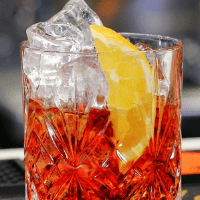
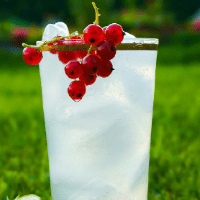

Whisky Sour
El whisky Sour es uno de los mejores cócteles del mundo. El termino sour nos advierte de que se trata de una bebida con un fuerte sabor ácido

Manhattan
El cóctel Manhattan destaca por el color rojo que le aportan las cerezas. Se trata de un clásico entre las bebidas más glamurosas que existen.

Boulevardier
Este cóctel a base de Whisky se creó en Paris y llegó de la mano de un norteamericano que durante la ley seca se dejo seducir por la grandeza de esta bebida.